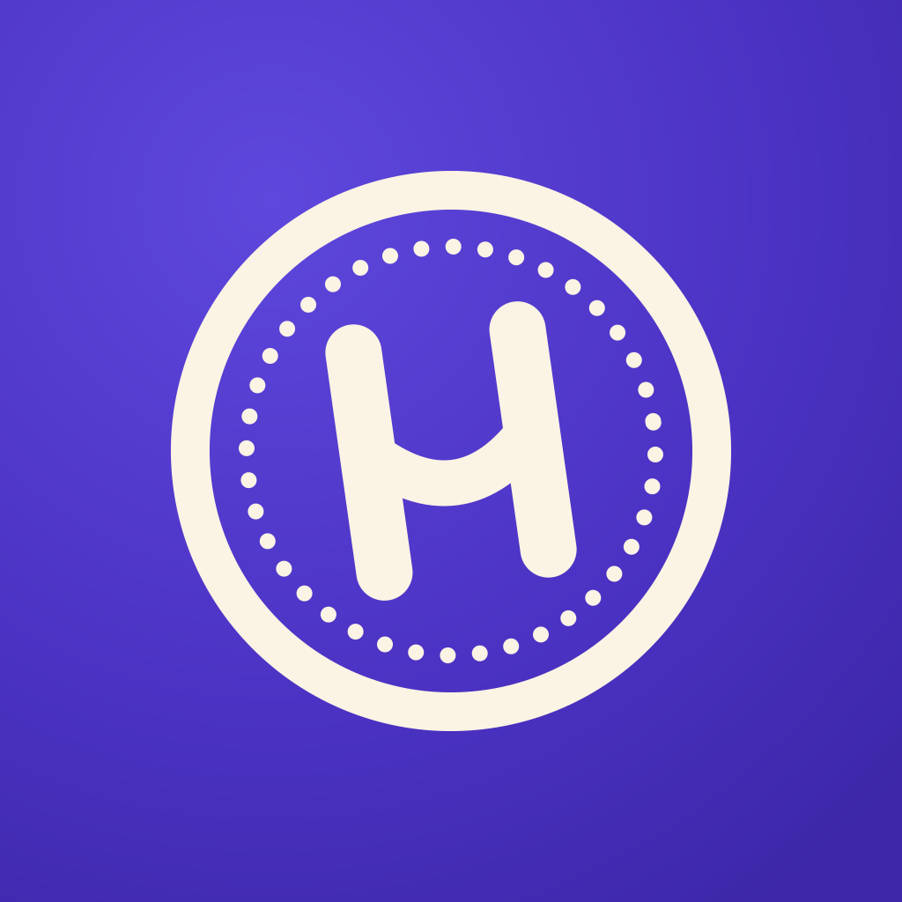
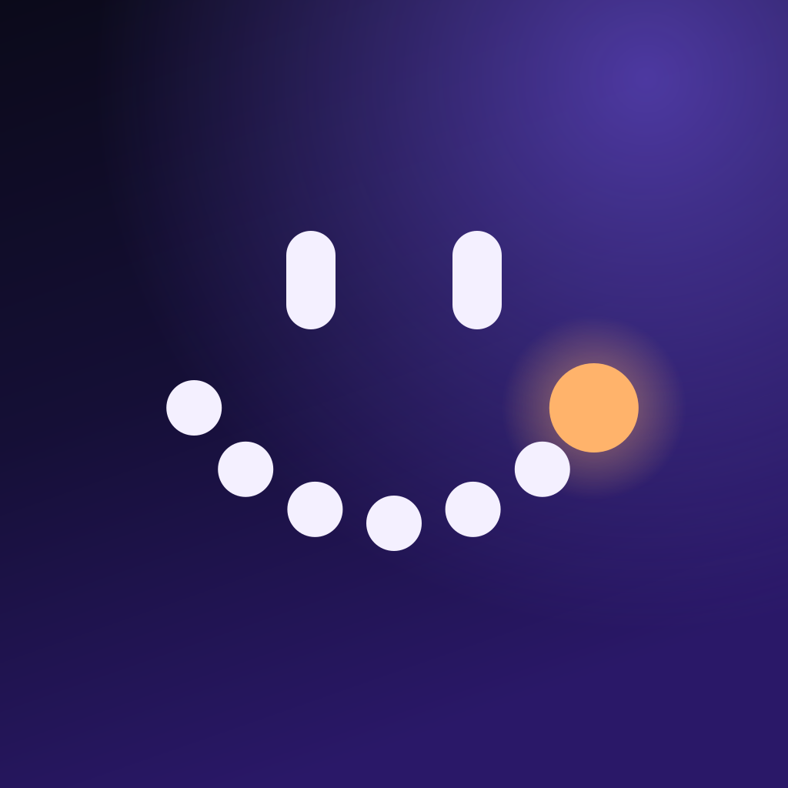
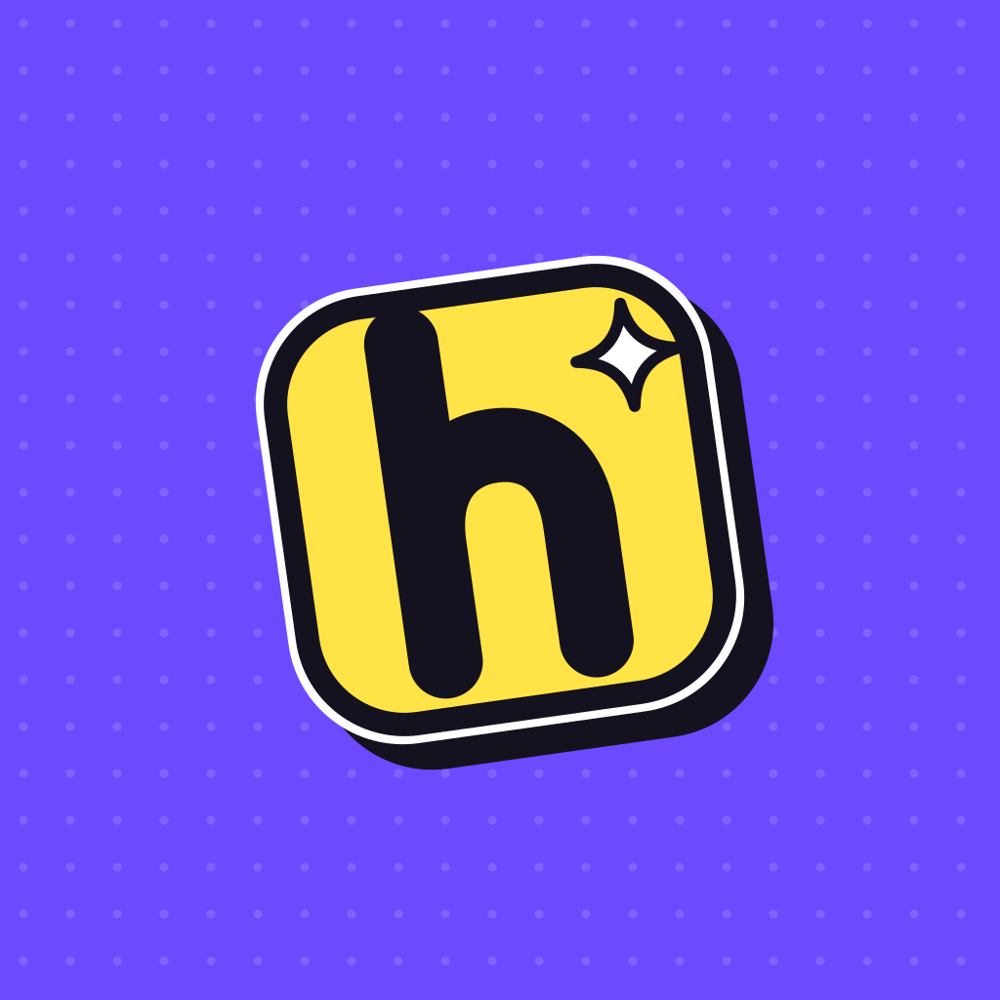

Üç görsel yön, aynı içerikle (“Konforun Kalesi” haftası). Her kutu kendi başına açılabilen tek dosyalık bir HTML; “tam sayfa” bağlantısı stres testini, %25 küçük önizleme testini ve kontrast notlarını da gösterir. Emoji, Android’deki gibi Noto Color Emoji ile çizilir. Kartta tarih, ham sayı, tutar ya da konum yok.
Krem kâğıt, mürekkep, mor mühür. Gizli durum: düzeltme bandı.
Gece gradyanı, parlayan küre, cam panel. Gizli durum: buzlu cam.
Mor albüm, kalın kontur, sert gölge. Gizli durum: arka kâğıdı görünen çıkartma.
Seçili = dolgu + kalın çerçeve + ✓ rozeti; pasif = soluk emoji. Kutular 72 dp.
A: mühürlü zarf → kırık mühür, zarftan yükselen kart. B: ufkun altındaki küre → doğmuş küre, parlayan kart.

1 · Mühür (A)
2 · Hafta gülüşü (B)
3 · Çıkartma h (C)README.md’de. Son karar Batuhan’ın.